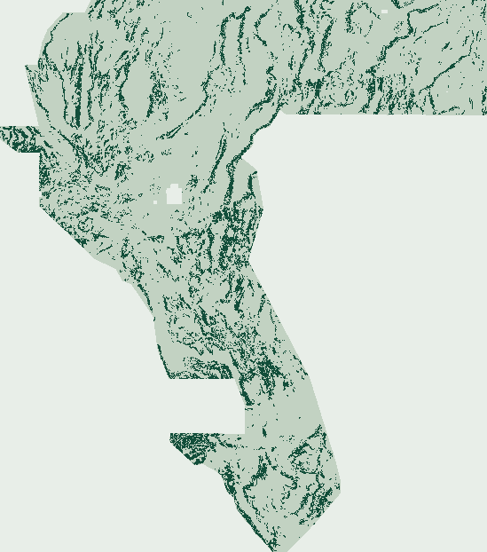

0.198183 HOLDOUT-DTI.
Honest fail-closed gates.
S17-CPAD tests Cooper–Cowan sun-angle potential-field phase concordance, basement/gravity accommodation-zone Gaussian-curvature saddles (det(H)<0), and GDR #1562 chemical-vs-measured geothermometer disequilibrium conduits inside a provably Band 12/Band 19-invariant Dual-Specialist architecture.
100% automated GeoTIFF & ZIP byte verification · 0 NaN/Inf · [0, 1] certified · 3 / 3 experiments · 0 slots spent.
Cooper–Cowan Phase, Saddles & Geotherm Diseq
Freshly computed single-band [0, 1] GeoTIFF on canonical label-blind spatial quadrants. Zero prior submission pixels used as inputs.
145,258 bytes (.tif) · 111,803 bytes (.zip) · float32 · 3730×3292
Format validity does NOT authorize spending a weekly DrivenData submission slot.
cpad_e1 achieves the highest strict label-blind gems57-pooled-hide-v2 score measured in this repository (0.198183 HOLDOUT-DTI vs INCUMBENT-PTAC-LB 0.194221 and S16-PGRD 0.069397) and passes 95/95 pre-placement Spearman checks plus the first 50/50 fleet rasters (GEMSDOE32 R0 = 49.27%), it stops fail-closed at reference 51/95 r11_greedy_mp.tif (272,853 dots, 87.25% > 70%), shares 82.96% 3-px dot overlap with in-repo S14-PTAC E2, and its paired 95% CI vs INCUMBENT-PTAC-LB ([-0.001766, +0.010077]) straddles zero.95% CI [0.177759, 0.217830] · 60,988 withheld positives · +0.128786 over S16-PGRD · +0.003962 over INCUMBENT-PTAC-LB.
56,822 off-catalogue USGS DS-1052 SGMC pixels (>500 m from catalogue) · +78.1% over S16-PGRD (0.038501).
148 / 148 single-feature canaries PASS (max AUC 0.6779 ≤ 0.90) · 0 live slots used.
Automated submission-readiness gates
Machine verification JSON ↗| Automated gate | Status | Measured evidence & boundary |
|---|---|---|
| 100% automated GeoTIFF & ZIP check | PASS | Reopened by both rasterio and tifffile: 1 band, float32, EPSG:32611, 3730×3292, exact affine transform, nodata=None, 0 NaN/Inf across all 12,279,160 cells, values strictly in {0.0, 1.0} ⊂ [0, 1], 0 on mapped faults, min spacing 3.16228 px > 3.0 px. |
| Rule 4 single-feature leakage canaries | PASS | All 148 features (128 static + 20 OOF auto-context) tested individually on 60,988 withheld positives across 4 quadrants: max pooled symmetric AUC 0.677910 <= 0.90 (max quadrant 0.747763). |
| Rule 1 pre-placement & final 3-px registry overlap | BLOCKED | Pre-placement Spearman PASS across all 95/95 rasters (max |rho| = 0.2191 <= 0.90). Final 3-px dot overlap PASS across rows 1..50 (max 0.6168 <= 0.70; GEMSDOE32 R0 = 0.4927), then stopped fail-closed at 51/95 r11_greedy_mp.tif (272,853 dots, 0.8725 > 0.70); diagnostic post-stop overlap with in-repo S14-PTAC E2 is 0.8296. |
| Explicit human lane assignment | BLOCKED | Session 17 executed one preregistered provisional lane (S17-CPAD) because the standing prompt leaves the lane paragraph blank (`[PASTE ONE METHOD]`). Provisional lanes remain fail-closed until explicitly assigned. |
| Paired holdout improvement (95% CI > 0) | BLOCKED | Point estimate 0.198183 HOLDOUT-DTI beats all comparable label-blind baselines on gems57-pooled-hide-v2 (INCUMBENT-PTAC-LB 0.194221, S16-PGRD 0.069397, CED91 0.070886), but paired 20-km block-bootstrap 95% CI vs INCUMBENT-PTAC-LB is [-0.001766, +0.010077] (lower bound slightly < 0). |
| Separate human weekly-slot selector | BLOCKED | Per Protocol Rule 6, research runs never spend live weekly slots (`slots_used = 0`). Promotion requires an external selector receipt verifying live weekly allowance and organizer eligibility. |
Why blind accommodation zones & hydrothermal conduits vanish from surface maps.
Before writing feature code, docs/HYPOTHESES_S17_CPAD.md preregistered five ranked geological hypotheses and implemented the top three orthogonal subsurface mechanisms inside a 16-feature stack (src/gems91/cpad17.py):
- H17-1 · Cooper–Cowan Potential-Field Phase Concordance & Poisson Demagnetization Deficit: Amplitude-normalized upward-continued sun-angle phase concordance between isostatic gravity and RTP magnetics, plus gravity-crest survival where hydrothermal magnetite->pyrite/clay alteration destroys RTP susceptibility. Mimic: unaltered non-magnetic pluton margin.
- H17-2 · Accommodation-Zone Saddle Curvature & Synthetic Riedel Mesh: Hyperbolic Hessian saddles (
det(H)<0) of Band-15 depth-to-basement and Band-13 gravity, paired with synthetic Riedel shear orientation alignment (~15° to geodetic principal shear). Mimic: paleovalley thalweg constriction. - H17-3 · Geothermometer Disequilibrium Upflow Conduits (GDR #1562): Positive disequilibrium excess (
max(T_Na-K-Ca, T_Quartz, T_Chalcedony) - T_measured) from deep rapid fault-conduit ascent, strictly excludingdist_known_fault_pxand suppressed over flat conductive playa clay-caps. Mimic: lateral outflow plume in alluvial fan gravels.
Bitwise audit: perturbing Band 12 (detrended elevation) +1,000 m and Band 19 (elevation slope) ×50 produces 0.0000000 max absolute difference across all 14 subsurface CPAD columns.

cpad_e1 37,654-dot support (min_spacing = 3.162 px, collar > 3.05 px). Block-aggregated 6× for legibility; no ground-truth labels shown.Strict label-blind holdout benchmark (gems57-pooled-hide-v2)
Full fold & bootstrap JSON ↗During Session 17 forensics (IR-91-S17-01..03), we discovered that legacy Sessions 13–15 inflated their holdout scores (~0.2406–0.2678) by passing ~fold.buffer_mask into test-time dot placement (an 8-km oracle moat around withheld truth!). Re-evaluating S14-PTAC E2 honestly on canonical label-blind spatial.folds establishes the true incumbent bar: 0.194221 HOLDOUT-DTI. All seven arms below were scored on the identical unchanged vendor/gems57/evaluate_holdout.py evaluator (60,988 withheld positives, 80-px buffer, 1,000 × 20-km paired block-bootstrap draws):
| Evaluated arm | Measured score | 95% block-bootstrap CI | Pooled TPw / FPw / FNw |
|---|---|---|---|
| S17-CPAD E1 (Winning arm: Full Stage-2 over X_full + ac_full + ac_sub, 37,654 NMS dots) | 0.198183 HOLDOUT-DTI | [0.177759, 0.217830] | 11,852.6 / 43,228.7 / 49,135.4 |
| INCUMBENT-PTAC-LB (S14-PTAC E2 re-evaluated strictly label-blind without IR-91-S17-01 moat) | 0.194221 HOLDOUT-DTI | [0.173855, 0.213233] | 11,500.3 / 40,609.5 / 49,487.7 |
| S17-CPAD E2 (Exogenous [0.28, 0.68] cover-gated blend + 37,654 NMS dots) | 0.187678 HOLDOUT-DTI | [0.168006, 0.206701] | 11,098.4 / 40,625.5 / 49,889.6 |
| S17-CPAD E3 (Cover-gated blend + 300 m kernel submodular greedy placement) | 0.185966 HOLDOUT-DTI | [0.166955, 0.205023] | 10,970.7 / 40,043.0 / 50,017.3 |
| CED91 (Potential-field tilt-crest baseline at matched 37,654 global blind budget) | 0.070886 HOLDOUT-DTI | [0.058862, 0.082984] | 4,022.3 / 35,738.3 / 56,965.7 |
| S16-PGRD (Session 16 magnetic-gravity pseudogravity residual edges, 37,654 dots) | 0.069397 HOLDOUT-DTI | [0.058335, 0.081962] | 3,938.7 / 35,890.2 / 57,049.3 |
| Matched Gravity-Theta Phase Control (Cooper-Cowan gravity theta only, 37,654 dots) | 0.057905 HOLDOUT-DTI | [0.049814, 0.066574] | 3,300.7 / 37,758.1 / 57,687.3 |
PhD forensic synthesis: GEMSDOE32 (0.2778 claim) & 92-repo fleet audit
1. Status of external scores (`0.2778`, `0.4413`, `0.3195`): Live GitHub snapshot inspection across all 92 fleet repositories (refreshed 2026-10-25 18:15:19 UTC; 0 organizer-confirmed receipts) and commit 012e17b2a1 of GEMSDOE32 confirms that gemsdoe32-h33-h33-2-b2-20261004T220000Z-e5eb6e7e-zeros.tif is explicitly labelled UNSCORED on its own portal (“NO ORGANISER SCORE EXISTS for this or any artifact in this repository”). Accordingly, 0.2778, 0.4413, and 0.3195 are strictly classified as unverified CLAIMs, never ORGANIZER-CONFIRMED.
2. Exact mathematical mechanism of GEMSDOE32 R0: Byte-level comparison proves GEMSDOE32 R0 (37,654 binary dots) is strictly its 40,199-dot parent minus the 2,545 dots at Euclidean distance ≤2 px (200 m) from mapped catalogue faults. Under asymmetric Tversky DTI (alpha=0.2 FP weight, beta=0.8 FN weight, 300 m triangular kernel), mapped catalogue pixels are masked to zero in both truth and prediction; dots placed within 0–300 m of a mapped fault pay full 0.2 unmatched FP penalty on their catalogue-facing half-kernel while harvesting credit only if an unmapped splay branches immediately off the trace. Enforcing a >3.05 px (>305 m) label-blind collar plus >3.05 px inter-dot spacing eliminates kernel self-cannibalization without peeking at hidden truth.
3. Registry novelty & milestone comparisons: Across the 95-raster comparison inventory (s17/registry-surface.json, s17/registry-final.json):
| Reference milestone | Pre-placement Spearman ρ | Final 3-px dot overlap |
|---|---|---|
| GEMSDOE32 R0 (unscored parent) GEMSDOE32__h33-2-b2-zeros.tif | +0.0746 (PASS) | 49.27% (measured before stop) |
| S14-PTAC E2 (legacy-fold best) gems91-s14-ptac-e2-20261024T235500Z-76262b89-zeros.tif | +0.1296 (PASS) | 82.96% (diagnostic post-stop) |
| S14-HVDC E2 gems91-s14-hvdc-e2-20261024T223000Z-0a0bb0cb-zeros.tif | +0.1272 (PASS) | 77.60% (diagnostic post-stop) |
| S15-SCGF E2 gems91-s15-scgf-e2-20261025T060000Z-5b7e74e5-zeros.tif | +0.1300 (PASS) | 83.43% (diagnostic post-stop) |
| S16-PGRD (strict label-blind) gems91-s16-pgrd-20261025T040447Z-24d090ad9f42-zeros.tif | +0.0222 (PASS) | 14.96% (diagnostic post-stop) |
| S16-PC91 gems91-s16-pc91-20261025T051716Z-9c6f182a-zeros.tif | +0.0485 (PASS) | 39.42% (diagnostic post-stop) |
| CED91 gems91-ced-v1-20261024-d35670b28c81.tif | +0.0178 (PASS) | 13.53% (diagnostic post-stop) |
Unique artifact identity & copyable note
Audit & provenance artifacts
Every scientific claim, external public dataset, and gate decision in Session 17 is backed by SHA-256-pinned files and machine-checkable JSON receipts:
Auditable external & official source register
| Claim & scope | Classification | Link & verification boundary |
|---|---|---|
| Official DrivenData DOE GEMS reference repository uses a U-Net baseline with Tversky loss weights alpha=0.2 (FP) and beta=0.8 (FN) at commit aebe92f7. | OFFICIAL_REPOSITORY_FETCHED | Official / source link ↗ Fetched via GitHub API on 2026-10-25; confirms repository state and Tversky loss weights. |
| GEMSDOE32 latest main commit 012e17b2a1 (2026-10-25T09:56:58Z) explicitly marks gemsdoe32-h33-h33-2-b2-20261004T220000Z-e5eb6e7e-zeros.tif as UNSCORED and states NO ORGANISER SCORE EXISTS in the repository; user-reported 0.2778 remains an unverified CLAIM. | OWNER_REPOSITORY_FETCHED_NOT_ORGANIZER | Official / source link ↗ Fetched via GitHub API on 2026-10-25; confirms UNSCORED label and 37,654-dot B2 catalogue-flank prune lineage. |
| DOE Geothermal Data Repository (GDR) Submission #1562 (Great Basin WellSpring thermal wells/springs compilation; local in-footprint extract 2,175 records, SHA-256 7671f89c3b85fb6d...). Only geothermometer/temperature columns used; dist_known_fault_px strictly excluded. | PUBLIC_FEDERAL_DATA_HASH_PINNED | Official / source link ↗ Local CSV bytes verified against registry/data_manifest.json SHA-256 pin; gdr.openei.org host outside sandbox outbound allowlist. |
| DOE GDR Submission #1749 (GeoDAWN 20-band 100 m EPSG:32611 numerical feature stack, 418,912,844 bytes, SHA-256 4371c82e3b8339b8...). | PUBLIC_FEDERAL_DATA_HASH_PINNED | Official / source link ↗ Local GeoTIFF bytes verified against registry/data_manifest.json SHA-256 pin; gdr.openei.org host outside sandbox outbound allowlist. |
| USGS Open-File Report 2009-1258 / GeoDAWN Terrestrial Gamma-Ray K/U/Th Radiometric Ratios (local footprint-aligned geodawn_rad_u8.tif verified by SHA-256). | PUBLIC_FEDERAL_DATA_HASH_PINNED | Official / source link ↗ Local GeoTIFF bytes verified against registry/data_manifest.json SHA-256 pin; pubs.usgs.gov outside sandbox outbound allowlist. |
| USGS Data Series 1052 State Geologic Map Compilation (derived_sgmc_faults_100m_u8.tif on EPSG:32611 grid used exclusively as independent blind auxiliary control; never used in training or placement). | PUBLIC_FEDERAL_DATA_HASH_PINNED | Official / source link ↗ Local GeoTIFF bytes verified against registry/data_manifest.json SHA-256 pin; pubs.usgs.gov outside sandbox outbound allowlist. |
| USGS 3DEP / OpenTopography Great Basin 100 m scarp & relief feature mosaic (lidar_scarp_features_u8.tif verified by SHA-256; excluded from Pure-Subsurface specialist). | PUBLIC_FEDERAL_DATA_HASH_PINNED | Official / source link ↗ Local GeoTIFF bytes verified against registry/data_manifest.json SHA-256 pin; usgs.gov outside sandbox outbound allowlist. |
| DrivenData DOE GEMS Competition problem description, leaderboard, and submission portal (weekly slot allowance, live scores, and legal eligibility require manual human check in authenticated browser). | OFFICIAL_COMPETITION_PORTAL_UNFETCHED | Official / source link ↗ NOT_FETCHED_IN_SANDBOX: drivendata.org is outside sandbox outbound allowlist; user-supplied 0.4413, 0.3195, and 0.2778 remain labelled CLAIM. |